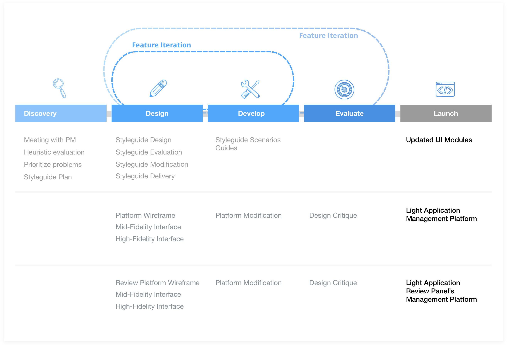
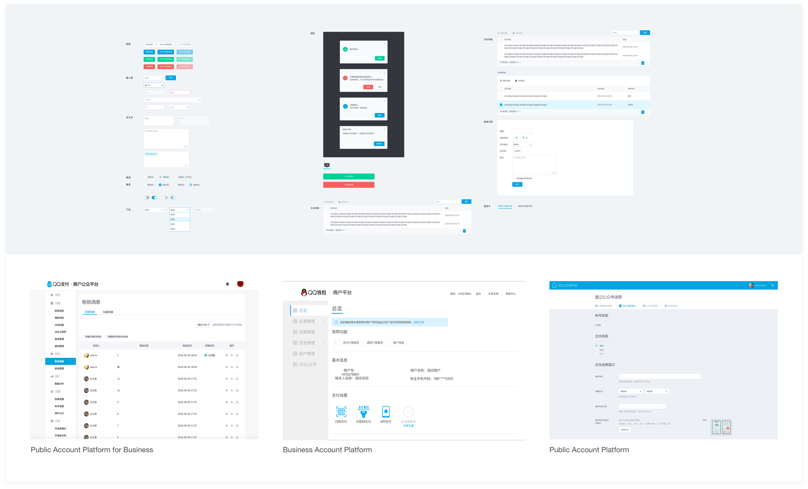
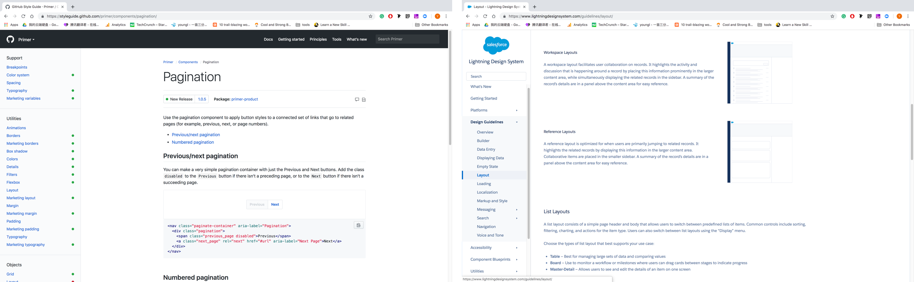
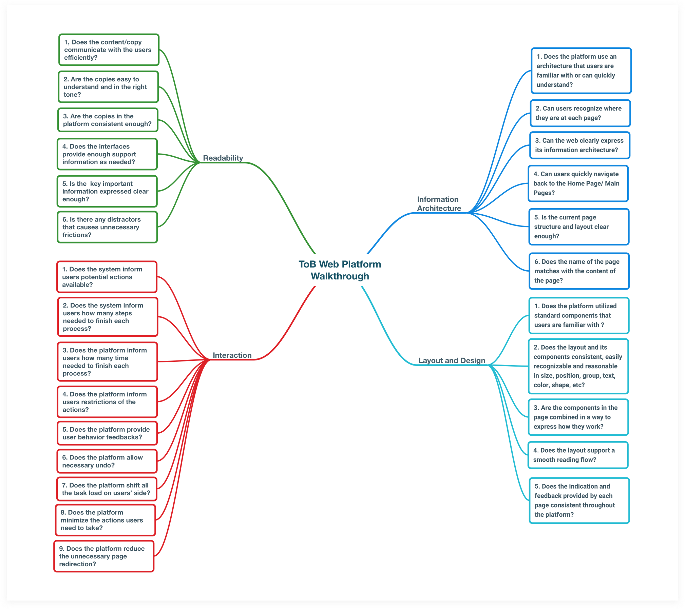
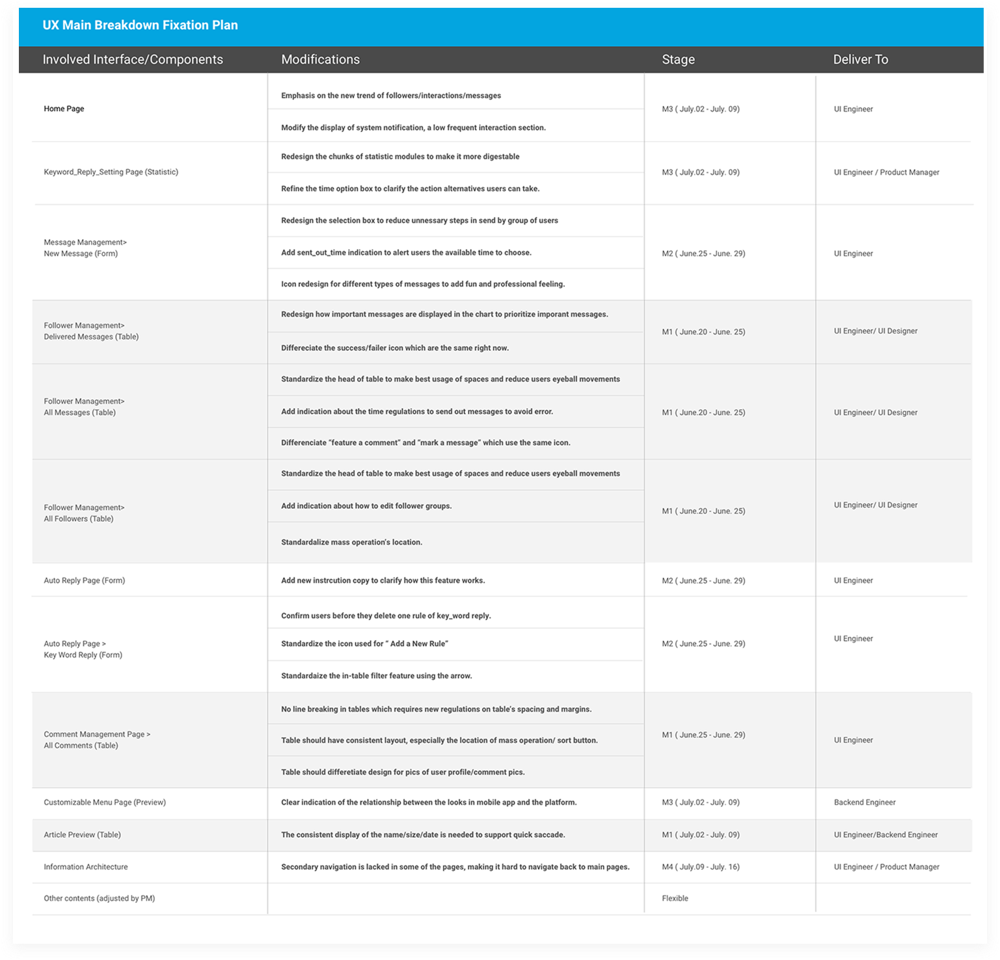
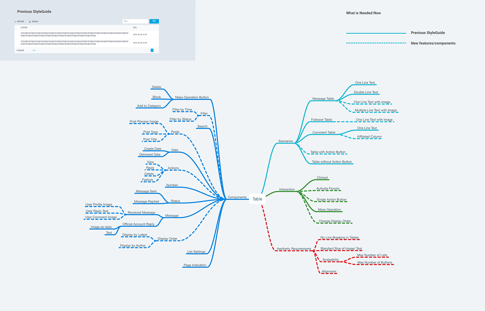
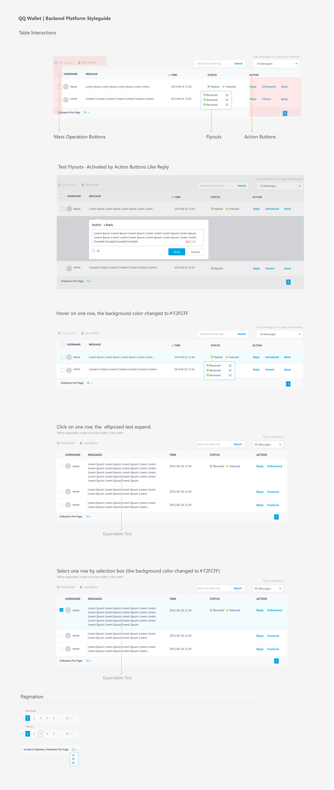
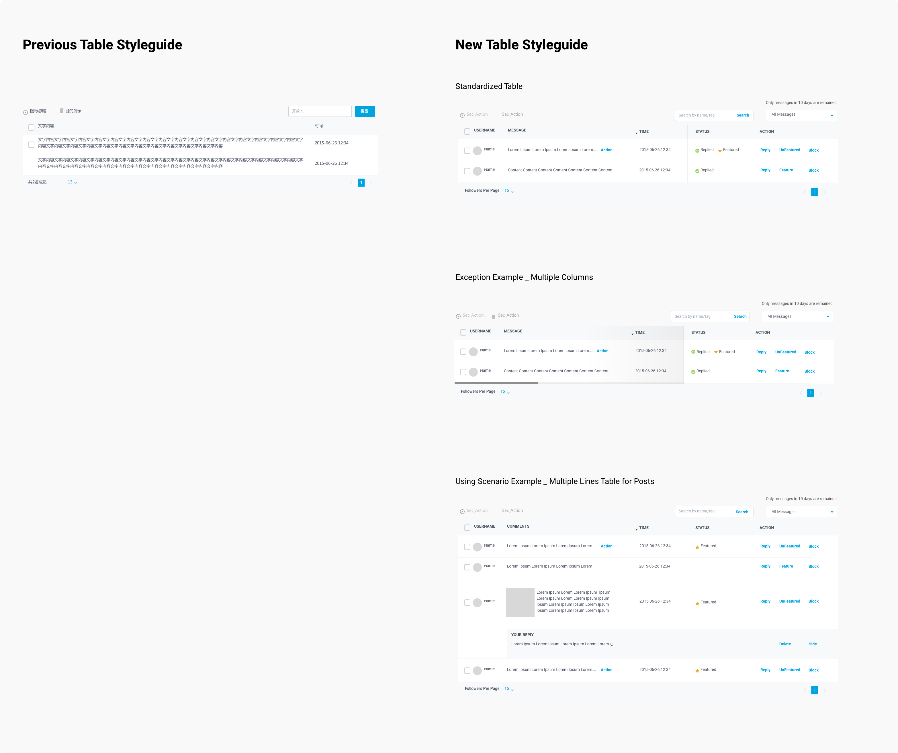

Tencent Internship
Background
Light Application and Mini Program Service are innovative services provided by Tencent allowing users to access and save independent apps through QQ and WeChat, two of the largest social networking platforms in China, without bothering to download apps from app store . Users can use all types of applications when they are chatting with their friends. The service was first implemented on WeChat and the great business success leads the team decide to implement it on QQ as well.

accessing a light application service within WeChat
My role
This is a two-month project where I worked as a UX Designer on QQ Light Application backend management platform, which will be used by developers to upload, manage and launch their own Light Application Coding Packages. I led the design process in an agile environment, from Styleguide Redesign, Light Application Backend Management Platform Design to Review Panel’s Backend Platform Design, closely collaborated with a product managers, a UI developer and four backend developers.
The Challenge
Strive for consistency over four platforms in two weeks 😱?
Based on sales representatives’ feedback, our users are complaining about design inconsistency on our backend platforms. As the light application backend management project is about to start, three product managers asked me to make “some slight” changes to make these four platforms look consistent during the gap time.
current styleguide for three existed platforms
Define a impactful and feasible goal
Showcasing the prior style guide redesigns to the product managers, they were shocked at the meticulous work needed and unexpected time caused by striving for consistency. Besides, one problem brought by such goal is that as the four platforms serves for different purposes, users will pay more attention to the content to tell the difference of the four platform, rather than visual impressions, thus adding extra cognitive burden to experienced users.
examples shown to the product manager indicting the workload
Although the best solution can be integrating the four platforms, however due to current department arrangement it requires too much human resources and department reorganizing beyond our control. Through discussing, we hypothesized user experience breakdowns can be one of the reasons users complaining about inconsistency. Researching, identifying and fixing these main user experience breakdowns is the most feasible and impactful task we can achieve in two to three weeks.
Research
Learn from competitors
Lacking user resources, usability testing is not possible although it is the most effective and less biased way. My zero experience to the four platforms can make the cognitive walkthrough result less convincing since I cannot list all the crucial tasks. Luckily I discovered that NetEase, one of the main competitor for Tencent, came up with a ToB platform checklist as a new research method. Through standard questions in each user experience design level, it works as a detailed and feasible criteria regardless of user tasks.
NetEase's ToB Platform Heuristic Checklist
Communication and seperate tasks
I followed the list to generate the result and came up with design suggestions. For communication's sake, rather than following the orginal research format, I also marked the problems identified to each page . During my presentation, I exchange notes with the three product managers and reached to consensus about what was changeable and what would remain unchanged. While the product manager works on the information architecture update for statistic pages and copy righting refinement, I took ownership on the UI kits that causes user experience breakdowns. View the heuristic evaluation presentation slides (Chinese Version)
Work plan and prioritize the severest problem
To make sure the team can collaborate well as other product requirements were also going on. A detailed modification list with delivery time was generated. With the modification listed, I discovered that half of the work requires modification on the table module. To achieve the best result in a limited time, improving user experience in table module became the my first stage work.
Design Solution
Interaction design that inconsistent with cognitive stages
Three evidences that I collected from prior research caught my attention: the location of the button, the interaction method of status and the information presentation way of images. One common problem reflected by these problems is that the table’s design is not consistent with users' actual cognitive stages.
User decision making model
From the analysis, tracing back to users’ intention, I discovered that in the table module, there is a key user decision flow from perceiving basic information, recognizing status information, mentally choosing a right button and then responding by pressing a needed button. The current table layout requires users to actively search and identify the location of needed information before each stage.
Insight 1: Facilitate user decision making stages along with eye movement
Fasten the stage transition in a table is beneficial to users in reducing the time users spend in finding information. Further, as their eye following a "F" or "Z" shape movement, allocating the needed information in each line from left to right can best obey the "recognition than recall" principle.
Insight 2: Information type follow users’ behavior
Besides facilitate such recognition process, information type should follow users’ intention and potential behaviors. Information for quick scan shouldn’t be interactive in recognition stage, status information should be able to provide further details when users are making decisions and confirming action feedback, action buttons should be directly reflecting users action as the last step.
Insight 3: Find a way to make sure development meet design need
Besides design process, I noticed that development can fail to recognize visual design constraints when using these UI Kits. I think generating a scenario-based guideline is important to be a reference when communicating with software engineers.
Solution
Update information architecture
With the design strategy in mind, I started to collect its information architecture. New functions and new features are marked out that are not standardized by the previous styleguide. These composition, interaction and scenarios that changed by the feature development need to be standardized to reduce user experience breakdowns.
Composition
Interaction
Define all possible user itneraction
Scenarios
Define when to use what

Impact
Applied to New Light Application Platform
The style guide design pushed the modification of UI coding modules. When the Light Application Platform project starts, I communicated with the software engineers to make sure the table modules are following the same standard. The updated table module are implemented in over 20 pages of the Light Application Management Platform, which greatly fastens the speed of our design process.
Main takeaways
Styleguide should convey key user behaviors besides the visual requirements
While style guide is normally acknowledged as a visual regulation, however through this project I discovered that when the intended users’ behavior pattern changed, such change should also reflect on the styleguide. Keeping the core modules consistent with the users’ behavior model are crucial for platforms that are constantly involving.
